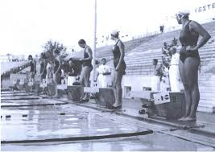
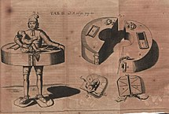

Le prime testimonianze di una disciplina antenata del nuoto risalgono al periodo preistorico. Nella caverna dei Nuotatori, sull'altopiano del Gilf Kebir, sono state rinvenute delle pitture rupestri rappresentanti uomini che eseguono movimenti simili a quelli degli attuali stili del nuoto. Tra le ipotesi prese in considerazione, però, c'è anche quella che gli uomini rappresentati eseguano movimenti di un rituale estraneo all'attività natatoria.Un sigillo di argilla egiziano datato tra il 4000 a.C. e 9000 a.C. mostra quattro nuotatori durante quella che si ritiene sia una variante del crawl.Le notizie scritte risalgono fino al II millennio a.C., e comprendono il Gilgamesh, l'Iliade, l'Odissea, la Bibbia (Ezechiele 47:5, Atti 27:42, Isaia 25:11), Beowulf, e altre saghe. Nel 1538 Nicolas Wynman, un professore di lingue tedesco, scrisse il primo libro sul nuoto: "Colymbetes".Il nuoto competitivo in Europa iniziò attorno al 1800, principalmente con il dorso. Il tedesco Guts Muths organizzò nel 1833 le prime gare di nuoto e tuffi. Il crawl venne introdotto nel 1873 da John Arthur Trudgen, che lo copiò dallo stile degli amerindi. Il nuoto era già nel programma delle prime olimpiadi moderne, quelle di Atene 1896. Nel 1902 il crawl venne migliorato da Richard Cavill.Nel 1908, venne fondata la Fédération Internationale de Natation Amateur (FINA).La farfalla era inizialmente una variante della rana, e venne accettata come stile distinto nel 1952.La prima storica generazione italiana di campioni del nuoto moderno è rappresentata da Emilio Polli, il più carismatico e forte campione di nuoto in Italia fino al 1931. Il primo italiano a scendere sotto la barriera di 1' nei 100 m stile libero fu Carlo Pedersoli, meglio noto come Bud Spencer: più precisamente con il tempo 59.50 nel lontano 1950, a Salsomaggiore in vasca da 25 m. James Magnussen è attualmente (2011) il campione del mondo dei 100 m stile libero, la più rinomata specialità del nuoto.
Il nuoto, e gli sport acquatici ad esso correlati, vengono praticati per diversi scopi. Spesso questi scopi si sovrappongono e un nuotatore amatoriale, ad esempio, può nuotare anche per motivi di salute e benessere fisico. Il nuoto era indicato anche per la scoliosi ma recenti studi smentiscono questa affermazione, in particolare sconsigliano gli stili rana e delfino (che inducono la schiena a curvarsi) a livello agonistico.
Il nuoto viene usato anche per soccorso e per evitare annegamenti. Molto spesso si tratta di autosoccorso, quando una persona, che è caduta involontariamente in acqua, nuota per restare a galla e per raggiungere la riva.In aggiunta il nuoto viene usato per soccorrere altri nuotatori in difficoltà. Esistono diversi stili di nuoto adatti a questo scopo. Tali tecniche sono studiate ad esempio dagli Assistenti bagnanti, o da membri della Guardia costiera. I concetti base del primo soccorso e del salvataggio in acqua devono essere tuttavia apprese anche da istruttori di nuoto che, in Italia, devono essere tesserati F.I.N.. La prima nozione da tener presente è che non si deve mai perdere il contatto visivo con la persona in difficoltà, e quindi le nuotate vanno eseguite con la testa fuori dall'acqua. Dopo aver avvicinato la persona in difficoltà, per trarla in salvo si possono usare varie tecniche. Come regola generale, possiamo dire che durante l'azione di salvataggio è necessario tenere ben salda e fuori dall'acqua la testa del bagnante, per evitare che beva e si creino situazioni di panico. Il soccorso in acqua, dapprima praticato solo per recare aiuto a nuotatori in difficoltà, è oggi diventato un vero e proprio sport detto nuoto per salvamento. Le competizioni di salvamento prevedono gare in acqua effettuate trasportando manichini, immergendosi in acqua sotto degli ostacoli per simulare il soccorso di persone già mezze affondate o simili.
La ginnastica prenatatoria è un'attività motoria propedeutica del nuoto, sebbene sia limitatamente valutata rispetto all'attività natatoria propriamente detta, riveste aspetti di rilievo in quanto una buona ed equilibrata ginnastica, parametrata al livello di sviluppo fisiologico e all'età dell'allievo, consente all'organismo di aumentare la funzionalità dei sistemi organici centrali e di preparare adeguatamente le strutture muscolari ed articolari alla successiva attività in acqua. Finalità e scopi: Riscaldamento muscolare Rappresenta la fase di transizione dal riposo all'attività, i cui principali obiettivi sono: aumentare la vasodilatazione, l'approvvigionamento di sangue ai muscoli e di conseguenza favorire l'apporto di nutrienti e lo scambio gassoso al muscolo in attività, aumentare gli impulsi nervosi al muscolo, migliorare lo smaltimento delle scorie e aumentare la temperatura corporea per fare in modo che l'attività degli enzimi responsabili della produzione di energia possa essere ottimizzata. Apprendimento/padroneggiamento degli schemi motori di base Gli schemi motori di base sono gli elementi strutturali del movimento volontario e finalizzato. Nello sviluppo psicomotorio sono i primi a comparire spontaneamente e rappresentano le forme elementari di movimento, coordinazione e la prima applicazione delle capacità motorie. Gli schemi motori di base sono movimenti globali effettuati nella dimensione spazio-temporale e rappresentano il presupposto per il successivo sviluppo della motricità. Sono degli esempi: camminare, correre, saltare, strisciare, rotolare, equilibrarsi, lanciare, afferrare, arrampicarsi. Favorire lo sviluppo/ stimolare le capacità coordinative Le capacità coordinative consentono di progettare, organizzare, controllare e regolare il movimento nel tempo e nello spazio. Dipendono dal sistema sensopercettivo che è l'insieme delle strutture e dei processi attraverso cui il soggetto riconosce, acquisisce e discrimina le informazioni provenienti dall'esterno (ambiente circostante) o dall'interno (dal proprio corpo) prendendone coscienza (percezione). Le capacità coordinative sono state studiate da diversi autori e attualmente sono distinte in generali (capacità di apprendimento motorio, di controllo motorio e di adattamento e trasformazione) e speciali (capacità di equilibrio, di ritmo, di reazione, di orientamento, di differenziazione, di accoppiamento e combinazione, di trasformazione).Favorire lo sviluppo/ stimolare le capacità condizionali Le capacità condizionali dipendono da fattori anatomici e fisiologici dell'individuo in particolare discendono dal grado di efficienza e di sviluppo dell'apparato cardiocircolatorio, respiratorio, muscolare e sono influenzate dai processi metabolici che conducono alla produzione di energia. Le capacità condizionali sono distinte in forza, resistenza e velocità; le esercitazioni mirate al loro sviluppo servono a creare il patrimonio motorio di ciascun soggetto.